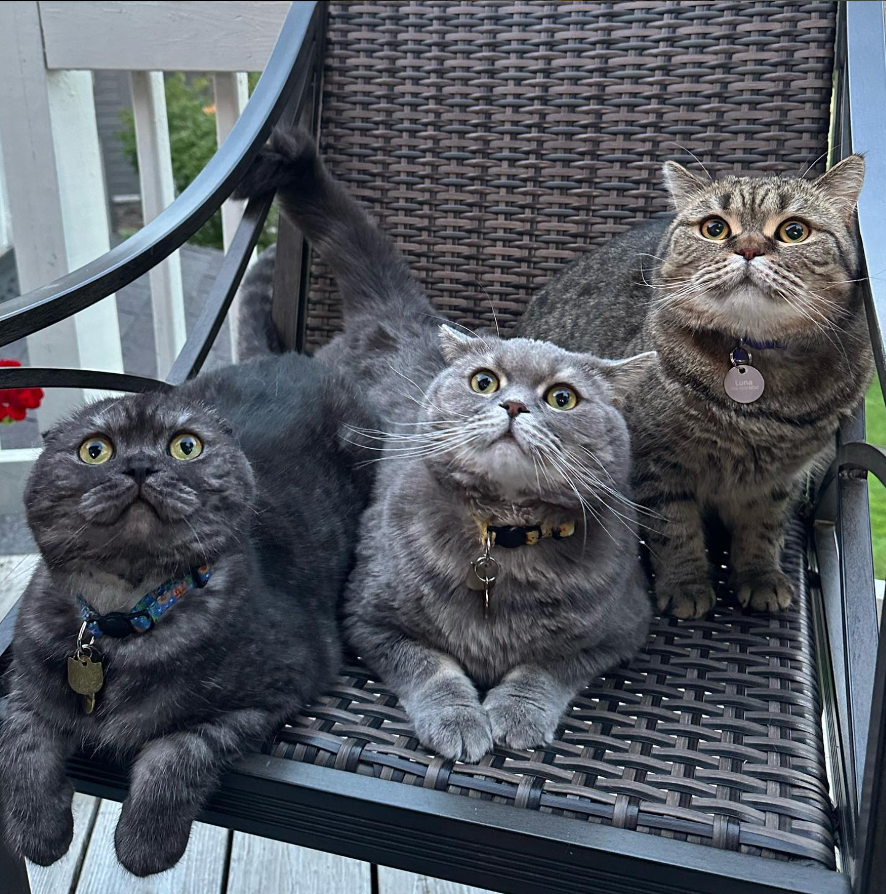
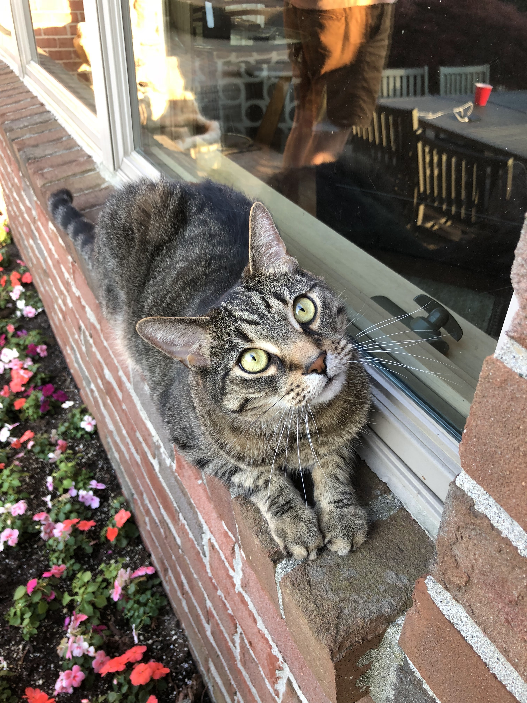

Bacon Q Dog

Bacon Q. Dog is a 9yr old labradoodle. He prefers to spend his days lounging among the three different beds/couches that his family has gifted him. He enjoys a walk or two around the neighborhood, as long as he can pretend that he doesn't see any of the other animals to avoid the embarrassment of not wanting to admit he has no wolf-like skills in chasing them.
At night just as the rest of the family is ready to relax, Bacon suddenly wants to release all of his energy. He will place his toys on a mini couch and frantically drag the couch around, giving his toys "a ride." There is also a lot of rolling. Lots and lots of rolling.
Photo Gallery

Bacon wearing a bandana

Bacon at puppy graduation!
Bacon showing off tricks! :D

Pirate Bacon
Likes
- Belly rubs
- Playing tug-of-war
- Sneaking onto the couch
Winston
Winston is a Scottish Fold. He loves to relax, cuddle, and eat sashimi! He has a brother named Oswald and a sister named Luna, they were all from the same liter but he was the only one with folded ears.
Winston is famous! He has an instagram @millie_winston_oswald and Taylor Swift adopted her cats from the same breeder!
Photo Gallery
Winston is an avid reader 🤓
Winston, however, hates baths
Winston's favorite holiday is Halloween
Winston loves his brother and sister! They are also Scottish Folds, however, their ears do not fold like Winstons.
Likes
- Sashimi
- Taylor Swift
- Love Island Australia
Mort
Mort is a grey Tabby! He is super cuddly and loves to sleep all day. One of his favorite things to do is lay in sun patches around the house
Mort has a sister named Bella and the two of them love to lay together. Mort also loves to play with his cousin, Winston
Photo Gallery
Mort's favorite thing to do is sleep!
Mort loves to play with his cousin Winston
He loves to go outside and listen to the birds.
Mort likes to hang with his sister, Bella!
Likes
- Sleeping
- Cheddar Blast Goldfish
- Warm blankets